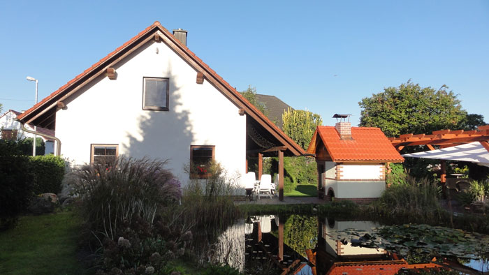
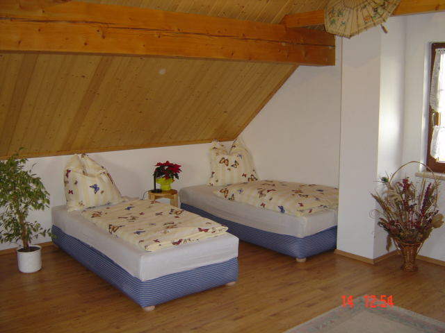
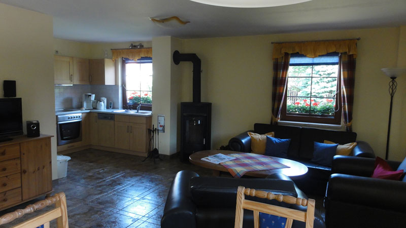
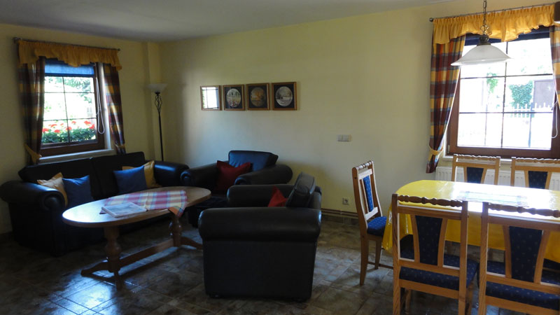
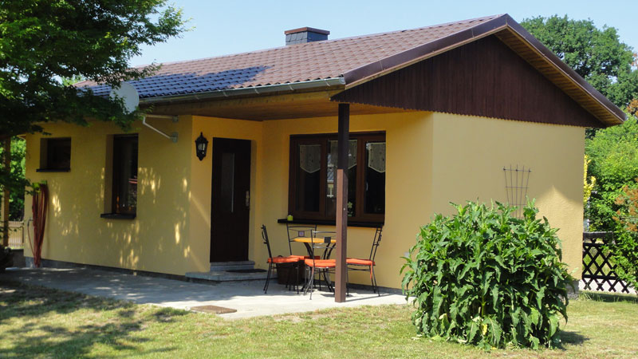
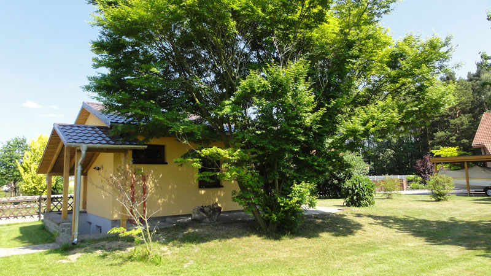
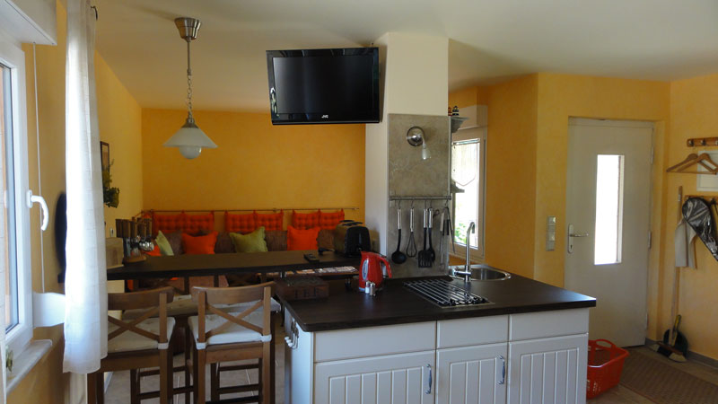
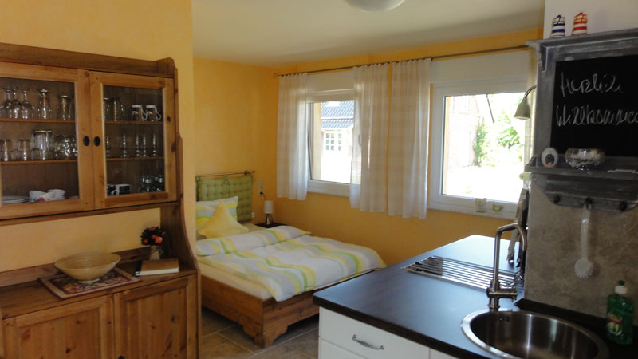

Ferienhaus Schombel in Meuro
Willkommen in den Ferienhäusern direkt am Lausitzring
Herzlich Willkommen
in Meuro.
Die Familie Schombel heißt Sie recht herzlich willkommen in der Gemeinde Meuro in der Niederlausitz.
Die Ferienhäuser liegen in unmittelbarer Nähe zum Lausitzring im Süden Brandenburgs.
Wir würden uns freuen Sie bei Gelegenheit in unserem kleinen Reich begrüßen zu dürfen.
Meuro
Schauen Sie sich um in unserer Heimat. Hier gibt es Netto, Aldi, Lidl und Wald, Wald, Wald.
Erfahren Sie mehr...
Der Lausitzring
Nur einen Steinwurf entfernt in direkter Nachbarschaft bietet sich dem Interessierten eine atemberaubende Rennstrecke.
Weitere Informationen...
Brandenburg
Erkunden Sie eine wunderschöne Landschaft im
Süden Brandenburgs. Erleben Sie einen erholsamen
Urlaub in einer ruhigen und gleichzeitig interessanten
Umgebung zwischen Dresden und Berlin.
Interessantes in Südbrandenburg...
Das große Ferienhaus
Es erwartet Sie ein großzügiges Haus mit Terrasse am Teich. Hier kann man grillen oder den Tag am Lagerfeuer ausklingen lassen. Im Erdgeschoss befindet sich der Wohnraum mit komplett ausgestatteter Küche. Ein knisterndes Kaminfeuer sorgt für Gemütlichkeit am Abend. Ein Essplatz mit viel Licht und ein kleines Bad mit Dusche und WC ergänzen das Erdgeschoss. Im Obergeschoss befinden sich die Schlafgelegenheiten für bis zu 6 Personen. Handtücher und Bettwäsche gehören selbstverständlich zur Ausstattung.




Gartenhaus
Das liebevoll gestaltete Gartenhaus befindet sich auf einem separaten Wiesengrundstück. Optimal ausgestattet ist es für 2 Personen, Platz zum Schlafen finden aber auch bis zu 4 Personen. Wir bieten ein Doppelbett, 2 Schlafliegen im Wohnbereich, eine Miniküche mit 2 Kochplatten, Kühlschrank, Spüle und Geschirr, einen Ess-Tresen, Kaminofen und ein Bad mit Dusche und WC. Handtücher und Bettwäsche sind selbstverständlich vorhanden.




Anfahrt
Mit dem Auto:
Aus Richtung Dresden oder Berlin fahren Sie von der Autobahn A13 Abfahrt Klettwitz herunter und biegen in Richtung Eurospeedway Lausitz ab.
An der Ampelkreuzung nach ca. 200 m fahren Sie nach links. Folgen Sie der Straße ca. 1 km. und an der zweiten Einfahrt biegen Sie links nach Meuro ab.
Nach dem Ortsschild biegen Sie in die erste Straße nach rechts ab. Dies ist die Feldstraße. Sie finden unser Haus genau in der Kurve.
Herzlich Willkommen!
Mit dem Zug:
Wir empfehlen Ihnen bei Anreise mit dem Zug bis Ruhland oder Senftenberg zu fahren. Von dort aus holen wir Sie nach Vereinbarung gern ab.
Kontakt
Adresse: Hans und Marina Schombel, Feldstraße 8, 01994 Meuro
Email: hans_schombel@t-online.de
Telefon: 035754 - 10224
mobil: 0176 - 9110 6616